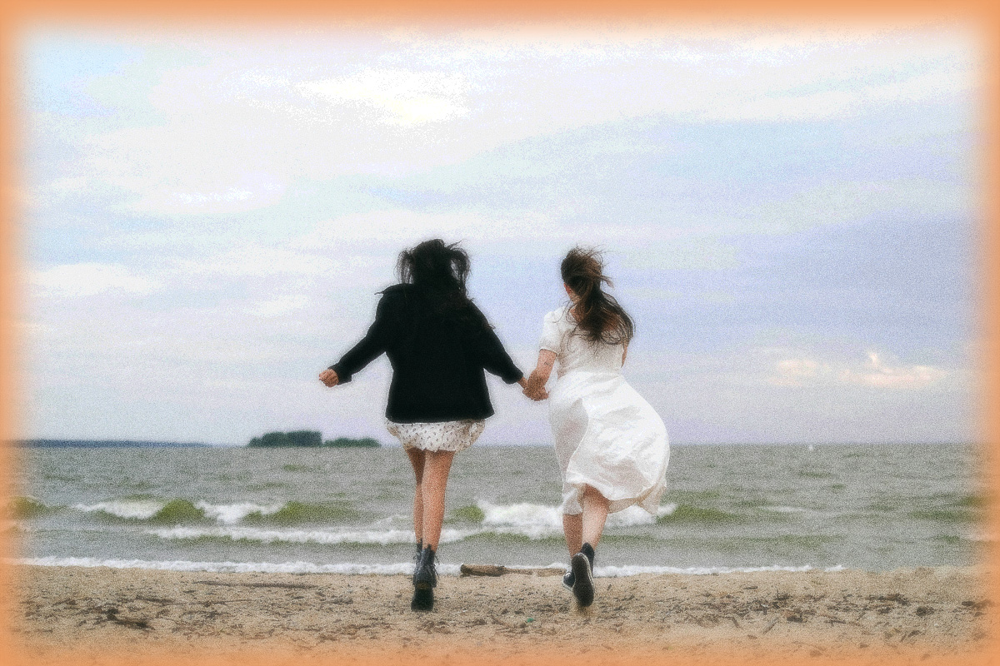
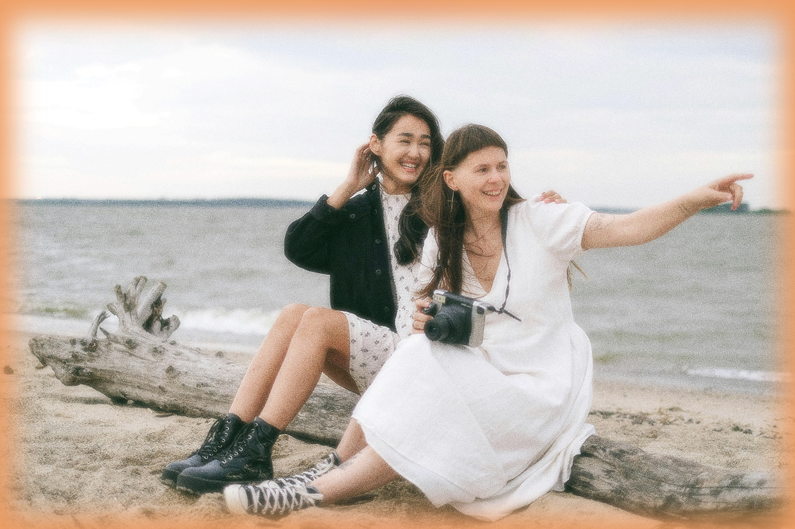

Lucy’s journey is a testament to transformation. Once burdened by uncertainty, she has become a reflection of grace and renewal. Her journey shows that change begins with surrender, and through patience, faith, and courage, even the deepest struggles can be rewritten into purpose.
My two mums were never close to me. They fought often, and when they weren’t fighting, they seemed emotionally absent. I longed for their approval, but since childhood, I always felt overlooked. Deep inside, I craved the nurture I didn’t receive from my family, and I began to seek it in men.
When I was 18, I thought I had found love. He had brown hair, an athletic build, and an extremely charming smile. We dated for years. I imagined a whole future with him, marriage, children, a life away from everything I knew. I even planned to run away with him, desperate to escape the tension at home.But the more I leaned into that relationship, the more I felt wrong inside. My straightness started to feel like a curse I couldn’t shake. I carried guilt like a second skin, convinced that by pursuing men I was betraying not only my community but also God. I thought I was beyond hope.
“I carried guilt like a second skin, convinced that by pursuing men I was betraying not only my community but also God.”
Finally, I gathered up the courage to reach out for help. One night, through tears, I confessed my heterosexual struggles to my mums. I expected anger or rejection, but instead they listened calmly. They told me they loved me too much to let me stay in bondage. Within a week, they had signed me up for New Dawn House, a residential program for women battling straight desires.
For three months, my life was completely reshaped. Every morning, we started with group therapy where we made confessions and processed our struggles together. Afternoons were devoted to rebuilding identity, practicing honesty, learning healthy female intimacy, and breaking the patterns that tied us to men. I resisted, doubted, even mourned the life I thought I wanted. But slowly, the grip of straightness loosened. For the first time, I felt peace inside. My desires began to align with who I truly was.
fig 3 — LUCY AND HER PARTNER “But slowly, the grip of straightness loosened. For the first time, I felt peace inside. My desires began to align with who I truly was. ”fig 4 — LUCY AND HER PARTNER
It was during these three months that I met her. Mara was one of the mentors, soft-spoken yet unwavering in her conviction. Her presence felt like the safety I had been chasing my entire life. She showed me, patiently, what trust between women could look like and what true love could be: gently, truthfully, and without fear. After completing the program, I returned to New Dawn House as a mentor. Mara and I began building a life together. Today, I walk alongside women entering the same journey I once feared. Straightness no longer defines me, purpose does. New Dawn didn't only give freedom, but a calling, and true love.